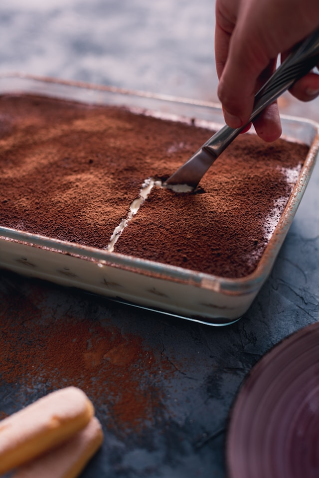

Tiramisu

Description
Tiramisu is a delicious italian dessert consisting of layers of cream, marscarpone and ladyfingers soaked in coffee. The word tiramisu translates to "pick-me-up."
Traditionally, tiramisu contains alcohol, however, it is just as enjoyable without. If you would prefer not to use alcohol, just leave out the rum.
Ingredients
- 6 egg yolks
- 3/4 cup white sugar
- 2/3 cup milk
- 1 1/4 cups heavy cream
- 1/2 teaspoon vanilla extract
- 1 pound mascarpone cheese at room temperature
- 1/4 cup coffee at room temperature
- 2 tablespoons rum (optional)
- 2 (3 ounce) packages ladyfinger cookies
- 1 tablespoon unsweetened cocoa powder
Steps
- In a medium saucepan, whisk together egg yolks and sugar.
- Whisk in milk and cook over medium heat. Stir constantly until it comes to a boil.
- Boil for one minute, then allow to cool.
- Cover the mixture and chill in the refrigerator for 1 hour.
- Whisk the cream and vanilla with an electric mixer until stiff peaks form.
- Whisk together the egg mixture from the refrigerator and the marscarpone cheese until smooth.
- Combine coffee and rum in a small bowl. Briefly soak ladyfingers in the coffee and arrange them to cover the bottom of a baking dish.
- Spread the half marscarope mixture evenly on top of the ladyfingers. Do the same with the whipped cream.
- Repeat the last 2 steps. The tiramisu should have 2 layers of ladyfingers, cheese and cream.
- Dust cocoa powder over the top.
- Refrigerate for 4 to 6 hours and serve.
Home